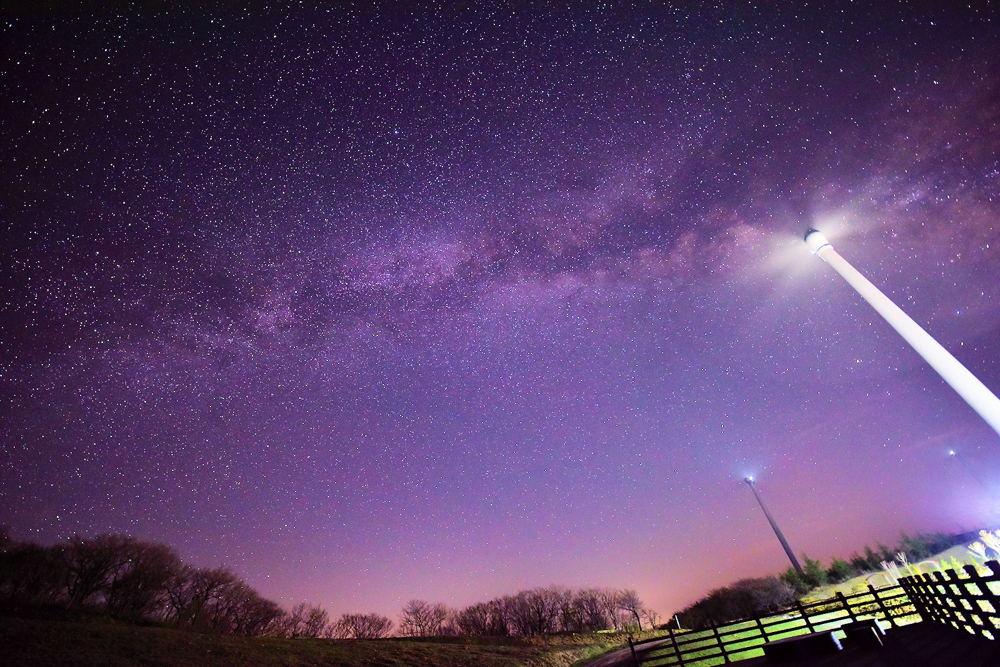
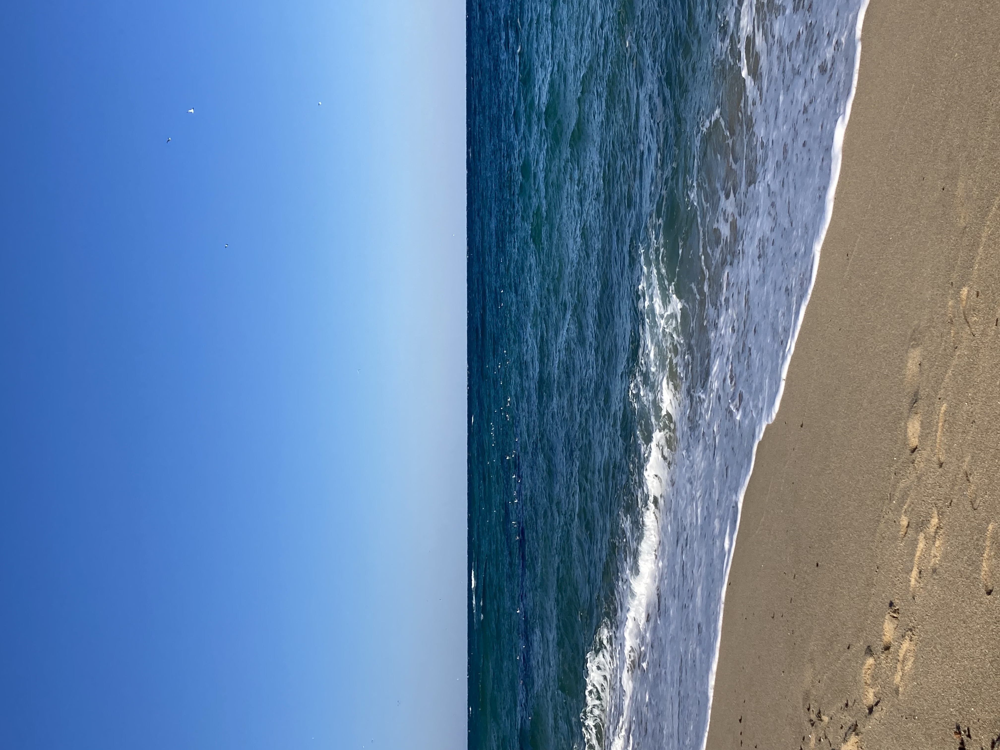
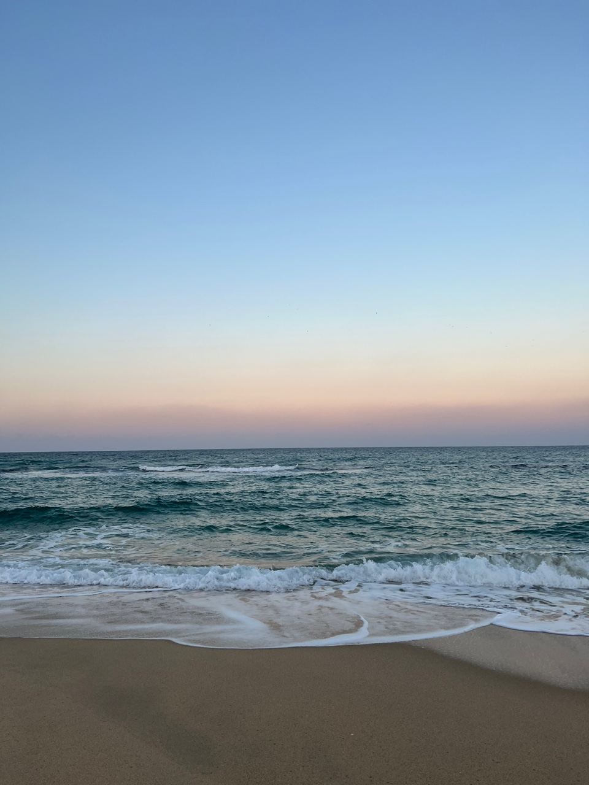
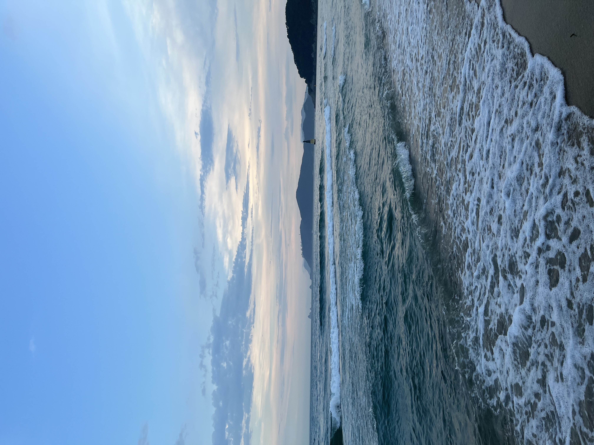
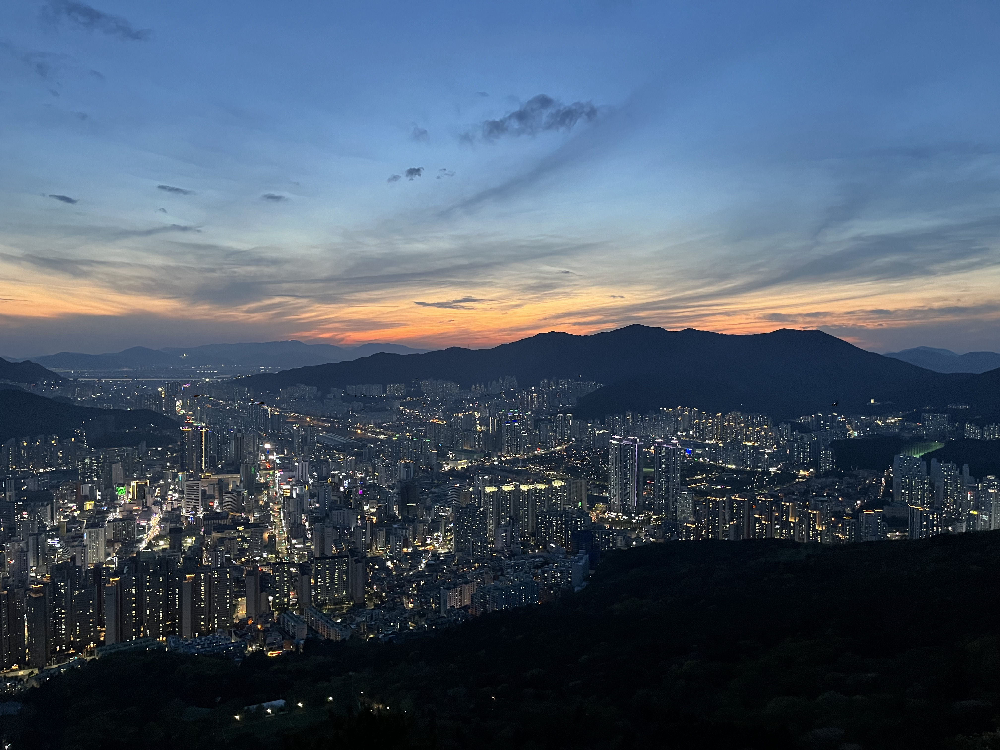
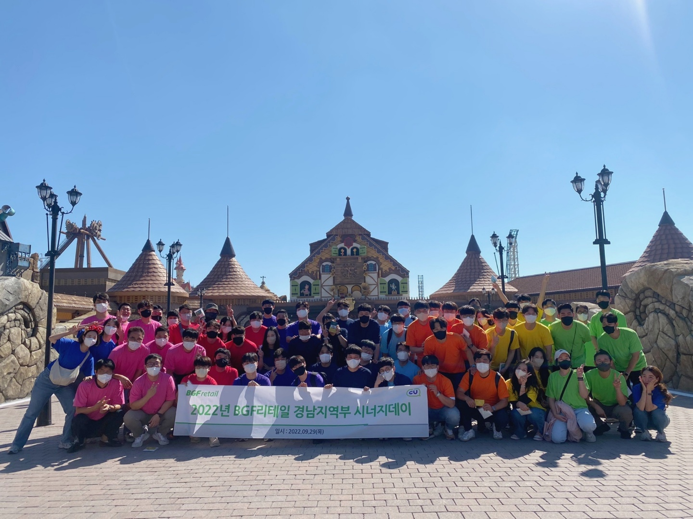
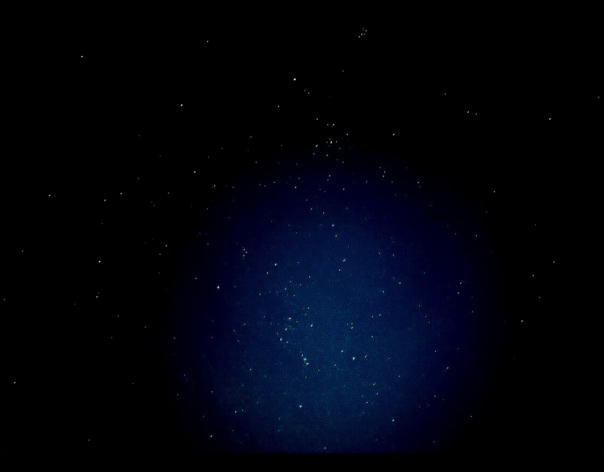
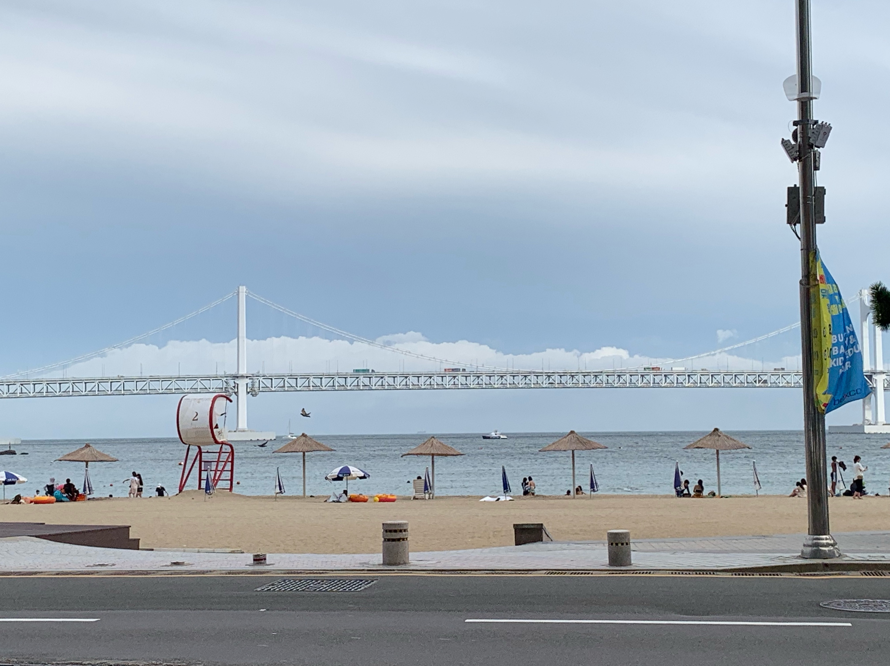

2019.04.13
취업 스트레스를 끝내고 일하던 도중에 2주의 긴 쉬는 시간이 주어졌다. 나는 은하수를 보기 위해 홀로 평창으로 떠났다.

2020.12.25
크리스마스 기념으로 J와 함께 강릉을 처음으로 가봤다. 잡은 숙소도 오션뷰에 처음 본 동해가 인상 깊었다.

2020.12.25
노을지는 강릉바다는 더 예뻤다. 카메라에 담지 못 하는 게 아쉬웠지만 눈으로 많이 담았다. 밤에는 불꽃놀이를 하기로 했다.

2021.07.11
오랜만에 만난 동생 M과 해운대에 갔다. 동생이 가까이에 있었지만 성인이 되고 난 후 서로 바빠서 연락도 자주 못 했다. 오늘 못 다한 얘기들도 하고 어릴 때 얘기도 했다.

2021.10.01
앨범을 정리하다가 18년도에 방학 때 학교에 나와 NCS 수업을 받고 있을 때 눈이 와서 선생님과 친구들이 수업시간이었음에도 불구하고 모두 나와서 놀았던 사진 중 하나를 발견했다.

2022.11.02
부산 전체를 한 눈에 볼 수 있다는 야경명소가 있다길래 Y언니와 함께 가봤다. 솔직히 부산이 광역시인데 그걸 어떻게 한 눈에 볼 수 있나 의심을 하기도 했지만 기대가 컸다. 사진은 아주 일부고 직접 가서 보면 속이 뚫리는 느낌이다. 근데 산을 올라가야해서 마음 먹고 가야겠더라.

2022.09.29
입사 후 처음으로 시너지데이를 참여했는데 부산에 롯데월드가 생긴 지 얼마 안 됐어서 정해졌을 때부터 기대를 많이 했다. 조를 랜덤으로 짰는데 입사한 지 얼마 안 돼서 모르는 분들 뿐이었지만 열심히 모시고 다녔다. 알고보니 다 30대 중후반이셨다.

2022.12.01
나는 다른 사람들보다 하늘을 자주 올려다보는 편인 것 같다. 하늘에 오리온자리가 보이면 삼각대를 챙겨와서 옥상으로 올라가 별을 찍는다. 어릴 때 유성우가 떨어진다고 하면 밖에서 가족 다같이 모기장을 펴고 떨어지는 별을 본 기억이 있다.

2023.02.03
광안리에서 간만에 언니들을 만나고 피곤해서 숙소를 잡고 일어나서 아침을 먹으러 가는 길에 광안대교에 구름이 건너고 있는 게 신기했다. 아직도 이 사진을 친구한테 보내주면 합성이라고 하는 게 웃기다.